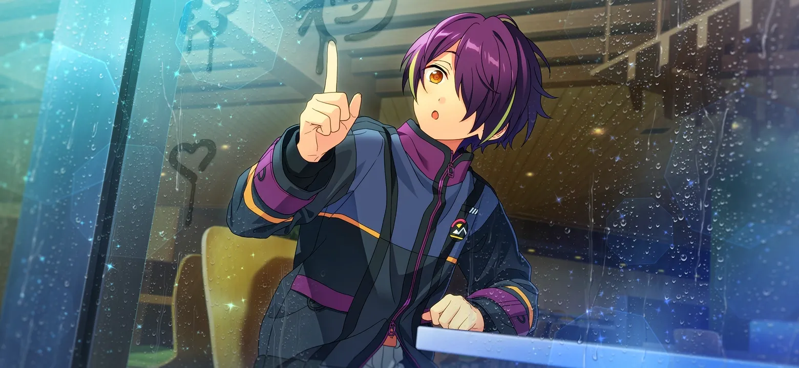
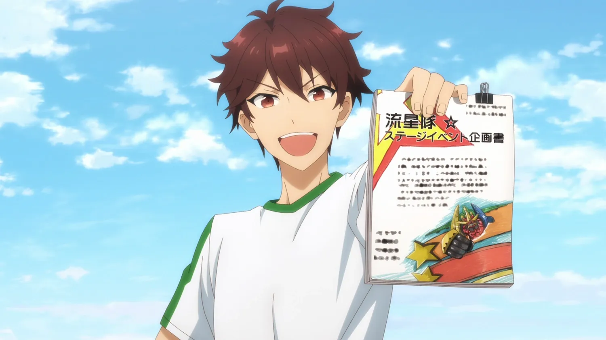

This page keeps track of random lore bits about AKARYUSEIbuki, updated and corrected over time. Feel free to email or contact me if you have answers, citations or additional information for any of the boxes below!

He is currently learning how to cook; he can be seen buying ingredients to prepare seafood in his Stella Maris minitalks and has recently made edible (burnt) pancakes.
According to the Oshi Room filter system, he is the only one of AKARYUSEI who is listed as "proficient at a musical instrument."
Keito practiced kyudo growing up into high school, and is said to be strong when he takes Anzu by the arm in Keito Sub Story 3. However, he's noted to be markedly less athletic from Kuro and Souma, and he even loses an arm-wrestling contest in The Rhythm Link Arm Wrestling Cup.
Sports - Keito grew up doing kyudo, and was the captain of the Archery Club in his days in Yumenosaki.
Office Items - According to office items, Keito is comfortable with jumprope
He has trouble with striking a kendo dummy, snowboarding, trampoline, batting in a batting cage, hitting a tennis ball against the wall, wakeboarding in the surf tank, and breaking stone tiles all the way through.
Kuro was the undefeated champion in the Dragon King Competitions, and known as the "Strongest Man in Yumenosaki." In Unification by Force, Souma and Kuro spar seriously for three days straight, lending to very high amounts of endurance.
Sports - Kuro is a black belt in karate, and was captain of the karate club in his days in Yumenosaki. In Ensemble Square, he is part of the SHIN Circle, a club for martial arts enthusiasts.
Office Items - According to office items, Kuro is comfortable with jumprope, striking a kendo dummy, batting in a batting cage,or breaking stone tiles all the way through.
He seems to have trouble with activities that move or require balance or coordination, like snowboarding, trampoline, hitting a tennis ball against the wall, and wakeboarding in the surf tank.
According to As Unbridled as a Heavenly Steed and Repayment Fes, Souma's training routine on his family's mountain includes wrestling bears and walking twice the distance from the city to the top of the mountain, lending to both very high strength and endurance. In Unification by Force, Souma and Kuro spar seriously for three days straight, lending to very high amounts of endurance.
Sports - Souma was raised with martial arts and was trained extensively by his father.
Office Items - According to office items, Souma is comfortable with striking a kendo dummy, wakeboarding in the surf tank, batting in a batting cage, hitting a tennis ball against the wall and breaking stone tiles all the way through.
He seems to have trouble with activities that require unconventional coordination to a samurai, like jumprope, snowboarding, or trampoline.
Tetora is generally well-rounded, athletically. He goes to the gym often. His speed and agilty helps him dodge incoming attacks from combatants like Kuro (Four Beasts of Fistfighting) and Ibuki (Ibuki Idol Story 2). According to Tetora in An Exchange out of Left Field, if he threw a punch at anyone other than Kuro, he might really hurt them.
Sports - Tetora is in the karate club, and is captain of the karate club in his second and third years in Yumenosaki. He became a black belt right before Motor Show. He is also part of SHIN Circle, a club centered around martial arts.
Office Items - According to office items, Tetora is comfortable with jumprope, striking a kendo dummy, trampoline, snowboarding, wakeboarding in the surf tank, batting in a batting cage, hitting a tennis ball against the wall, and breaking stone tiles all the way through. Overall, it seems sports are his forte.
As Midori says in Colorful Autumn, he carries vegetables at work at his home, so he naturally has high physical strength. Otherwise, he is naturally unmotivated.
Sports - Midori is on the basketball team in his days in Yumenosaki.
Office Items - According to office items, Midori is comfortable with snowboarding, wakeboarding in the surf tank, and hitting a tennis ball against the wall.
He seems to have trouble with jumprope, striking a kendo dummy, trampoline, snowboarding, batting in a batting cage and breaking stone tiles all the way through.
Sports - Part of Shinobu's ninja training for both himself and the Ninja Association includes parkour, climbing walls, and running around a track for endurance.
Office Items - According to office items, Tetora is comfortable with jumprope, striking a kendo dummy, trampoline, snowboarding, wakeboarding in the surf tank, batting in a batting cage, hitting a tennis ball against the wall, and breaking stone tiles all the way through. Overall, it seems sports are his forte.
In Crossfire, Tetora points out that Chiaki is far from being the strongest of the idols. As a stuntman, member of the Dream Unit MODE/D and his general tokusatsu poses and routines, Chiaki has high agility. Chiaki has high endurance overall, but is susceptible to heatstroke in summer and thus loses energy faster.
Sports - Chiaki was the captain of the basketball club in his days in Yumenosaki. In Ensemble Square, he is part of the SHIN Circle, a club for martial arts enthusiasts, and the Sports Survivors Circle, which gets together to play sports and recreational games.
Office Items - According to office items, Chiaki is comfortable with jumprope, striking a kendo dummy, trampoline, snowboarding, wakeboarding in the surf tank, batting in a batting cage, hitting a tennis ball against the wall, and breaking stone tiles all the way through. Overall, it seems sports are his forte.
In Deep Sea Mystery, Kanata shows that his running speed is very, very low. However, his karate chops are strong enough to make people's heads spin.
Sports - Kanata does not play sports.
Office Items - According to office items, Kanata is comfortable with trampoline, breaking stone tiles all the way through and hitting a tennis ball against the wall.
He seems to have trouble with jumprope, striking a kendo dummy, snowboarding, wakeboarding in the surf tank, and batting in a batting cage.
According to Ibuki in The Legend of KAGETSU and Dynamic Diamond, he has wrestled both grizzly bears and wild boars in America, lending to very high strength. His fighting tactics are hit-and-run, so he has high speed and agility. However, his "stats" drop when he loses the will to fight, as seen in The Legend of KAGETSU and AKATSUKI VS. Crazy:B.
Sports - Ibuki grew up learning self-taught martial arts (Ibuki Idol Story 2).
Office Items - According to office items, Ibuki is comfortable with jumprope, striking a kendo dummy, trampoline, snowboarding, wakeboarding in the surf tank, batting in a batting cage, hitting a tennis ball against the wall, and breaking stone tiles all the way through. Overall, it seems sports are his forte.
Office Items - According to office items, Keito can draw on the whiteboard.
We might be able to assume he can draw outfits designs well.
Office Items - According to office items, Kuro can draw on the whiteboard.
In Colorful Autumn, Souma explains that he does not excel in drawing, but he can copy a picture that is drawn. He is tense when he tries to draw, and makes clean, firm lines. According to Midori, his normal drawings resemble ink paintings.
Office Items - According to office items, Souma cannot draw on the whiteboard.
In Colorful Autumn, Tetora cannot draw well at all. This makes Midori love his art even more.
Office Items - According to office items, Tetora cannot draw on the whiteboard.
One of those facts I believe is true but needs citation.
Office Items - According to office items, Midori can draw on the whiteboard.

Office Items - According to office items, Shinobu cannot draw on the whiteboard.

Chiaki has drawn mecha-robots on past proposals for RYUSEITAI shows, as seen in the anime adaptation of Supernova, and in the original story, Midori notes that his designs of the monsters are cute. These designs were used to create mascot outfits like the Umbrella Octopus costume.
Office Items - According to office items, Chiaki cannot draw on the whiteboard.
One of those facts I believe is true but needs citation.
Office Items - According to office items, Kanata can draw on the whiteboard.
Office Items - According to office items, Ibuki cannot draw on the whiteboard.
Before his time as an idol, Keito aspired to be a mangaka. Given he made his own doujin, we might be able to assume he knows how to bind books (as seen by the existence of the Alice in Wonderland doujin Eichi holds in Tea Party).
In Yumenosaki, Keito often drew or designed posters used throughout the school (Soul in a Single Stroke, Philsopoher's Guidance). He also crafted together a hanafuda card (Hanafuda), and has done shodo (書道) in front of the school for New Year's (Daikagura).
In Ensemble Square, Keito practiced ikebana with Kanata, Koga and Ritsu for a show they were going to appear on.
Kuro routinely crafts, both as a job and as a hobby. Taught by his mother, his specialties include handicrafts like sewing, knitting and costume-making. Because his family is low-income, he made his own version of trendy clothes his sister wanted to wear (Folksong).
While in Yumenosaki, his official part-time job was making commissioned outfits for other idols and units, as well as maintaining, adjusting and fixing their stitches. According to Kuro in Kuro Idol Story 1, he always has a needle in his hand, since it improves his mood and serves as an outlet for stress. While striving to be an idol, he also wants to become a fashion designer and make a name for himself in the industry.
He has made plushies for his sister (The Crimson's Pure Heart) as well as puppets for Nazuna and the Broadcasting Committee (The Wolf and Red Riding Hood). He also partakes in occasional arts and crafts, like making teru-teru bouzu (照る照る坊主) with his sister (Kabukimono minitalk).
According to a winter 2025 voiceline from Keito, once Kuro gets obsessed with learning a new needlework method, he ends up getting obssessed and overdoing it, making a surplus of items.
Read more about all the outfits he has made for his units and others here.
In Yumenosaki, Colorful Autumn, Souma helps Midori, Tetora and Kanata draw and paint banners for the Takamine grocer, and has made shodo (書道) banners for Christmas (Blackjack).
One of those facts I believe is true but needs citation.